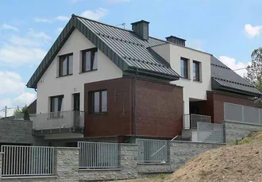
Dom „na skarpie”
Kielce
Dom jednorodzinny z dwoma mieszkaniami na skarpie. Stary budynek na działce przebudowany na garaż i połączony z nowym.
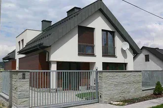
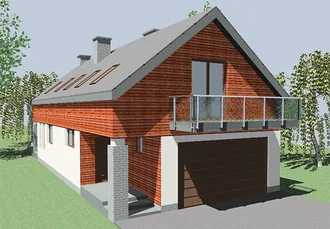
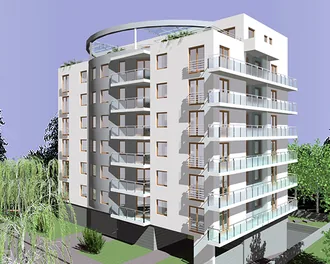
Pracownia ikarchitekt Izabeli Kułagowskiej. Domy jednorodzinne, budynki wielorodzinne i usługowe, przebudowy i wnętrza. Od koncepcji i warunków zabudowy po projekt budowlany i nadzór autorski.
ul. Urzędnicza 17, Kielce
Projektuję obiekty, które spełniają oczekiwania inwestora i dobrze wyglądają w swoim otoczeniu. Do każdego zlecenia podchodzę indywidualnie, bez gotowych schematów.
Prowadzę cały proces: od koncepcji, analizy działki i dokumentów do warunków zabudowy, przez projekt budowlany, po nadzór autorski na budowie. Przy instalacjach i konstrukcji pracuję ze sprawdzonymi pracowniami branżowymi, dlatego mogę podjąć się projektu każdego rodzaju obiektu.
mgr inż. arch. Izabela Kułagowska, upr. bud. SW-17/2005
Domy, budynki mieszkalne i usługowe, przebudowy, wnętrza i małe formy. Część z nich stoi już na ulicach Kielc i Warszawy.

Dom jednorodzinny z dwoma mieszkaniami na skarpie. Stary budynek na działce przebudowany na garaż i połączony z nowym.
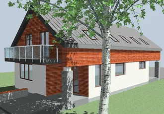
Dom jednorodzinny na działce o szerokości zaledwie 14 metrów.
14 m
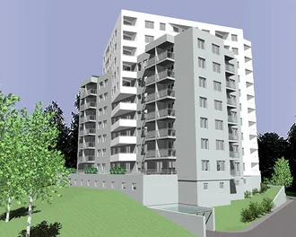
88 mieszkań, 61 miejsc garażowych i 4 lokale usługowe między niską zabudową a wieżowcami osiedla. Projekt z pozwoleniem na budowę.
Koncepcja budynku z 27 mieszkaniami na 8 kondygnacjach, uzupełnienie istniejącej zabudowy osiedla.
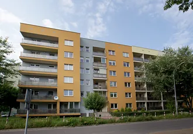
58 mieszkań dla SM „Bielany”. Projekt autorski opracowany w zespole Inwestprojektu Świętokrzyskiego.
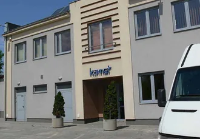
Przebudowa, rozbudowa i nadbudowa istniejącego budynku hurtowni.
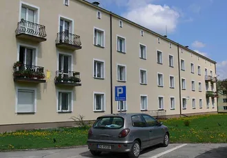
Projekt termomodernizacji budynku wielorodzinnego razem z kolorystyką elewacji i detalami.
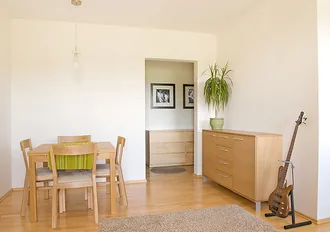
Mieszkanie w bloku z wielkiej płyty po metamorfozie, czyli prefabrykacja po liftingu.
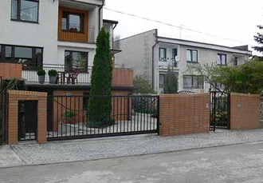
Podwórko razem z projektem ogrodzenia od ulicy.
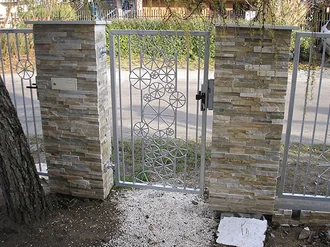
Mała forma architektoniczna: kamienne słupki i ażurowa furtka.
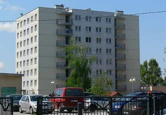
Wolnostojący, 8-kondygnacyjny budynek z klubem studenckim. Projekt w zespole Inwestprojektu Świętokrzyskiego.
Może Pani lub Pan powierzyć mi cały proces albo jeden etap, na przykład samą koncepcję czy nadzór autorski.
Pełna lista prac z podziałem na rodzaje obiektów. Część powstała we współpracy z pracowniami, w których pracowałam.
Proszę zadzwonić albo opisać krótko działkę i plany. Odpowiem i zaproponuję pierwsze kroki.